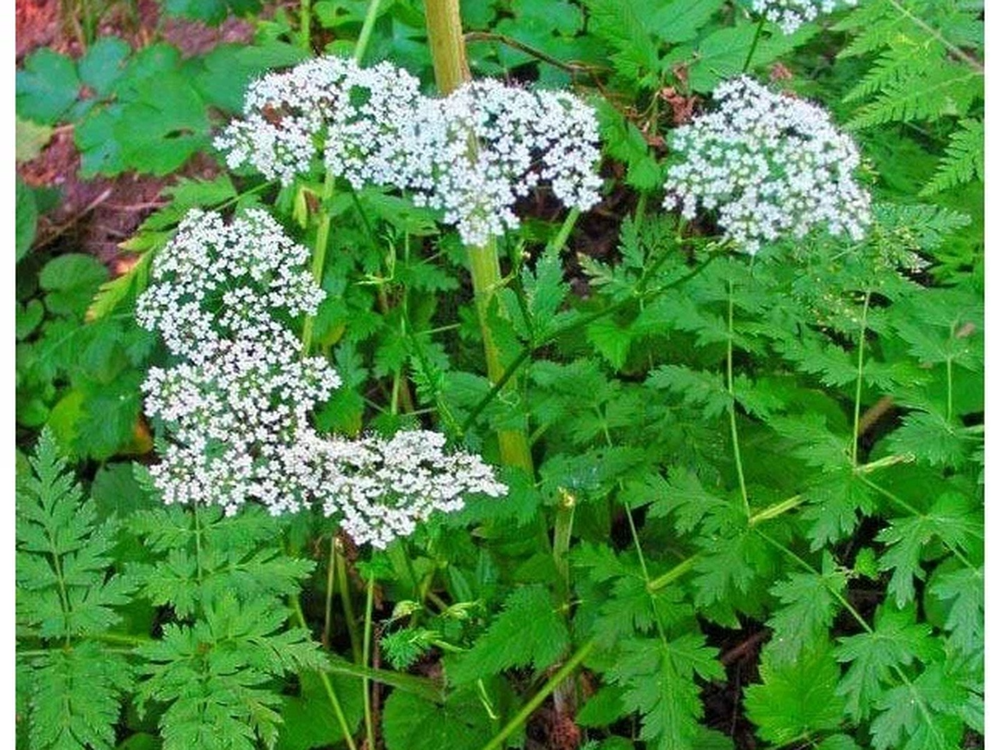

Прячет свои мелкие белые зонтики везде, где посуше и повыше. Этот метровый гигант — классический житель лугов и склонов. Не путайте с ядовитыми собратьями — у бедренца зубчатые, тупые листочки внизу.
Если замучил кашель, в народной практике использовали корень бедренца. Считалось, что растение помогает разжижать мокроту и снимать спазмы в животе. Соком растения пользовались при заложенности носа, а спиртовой настойкой на листьях — для улучшения кровообращения.
Сухой корень бедренца — 1 столовая ложка. Вода — 250 мл. Способ применения: корень нужно покрошить и проварить 10–15 минут на тихом огне или дать постоять в кипятке до остывания. Полученный отвар в народной практике принимают небольшими глотками при бронхите и астме. Также его используют при нарушениях пищеварения и для полоскания горла при ангине.
Бедренец камнеломковый не считается ядовитым растением, однако, как любое растительное средство, может вызывать аллергическую реакцию. Индивидуальная непереносимость может проявляться в виде сыпи, отёков, насморка и затруднённого дыхания. При чрезмерном применении возможны кожные реакции, в том числе фотодерматит или контактный дерматит. Перед применением растения в лечебных целях необходимо учитывать индивидуальные особенности организма и проконсультироваться со специалистом.